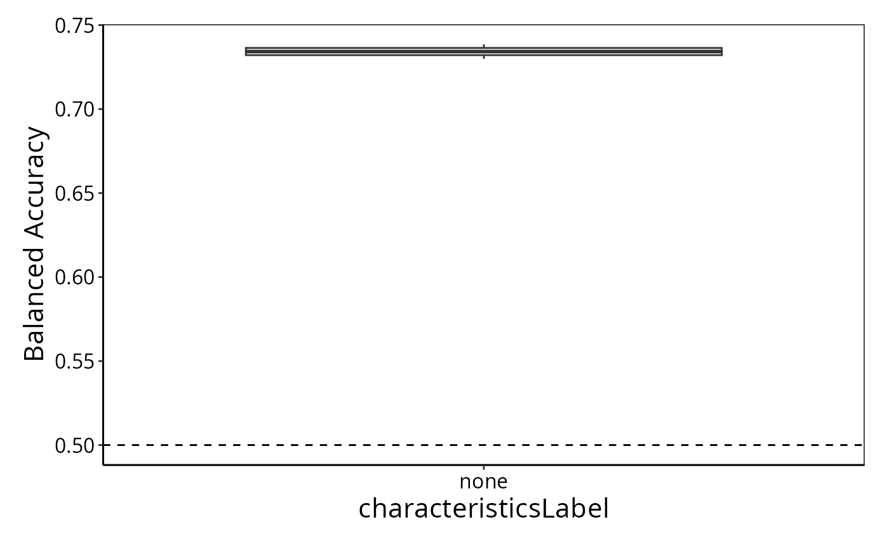
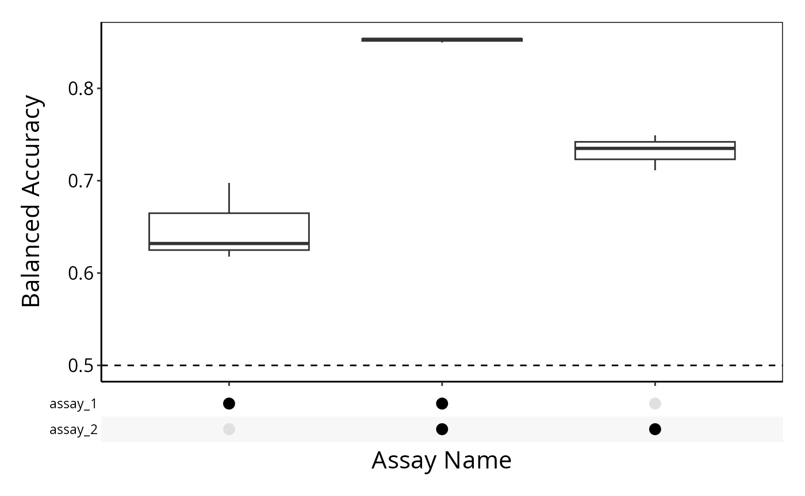
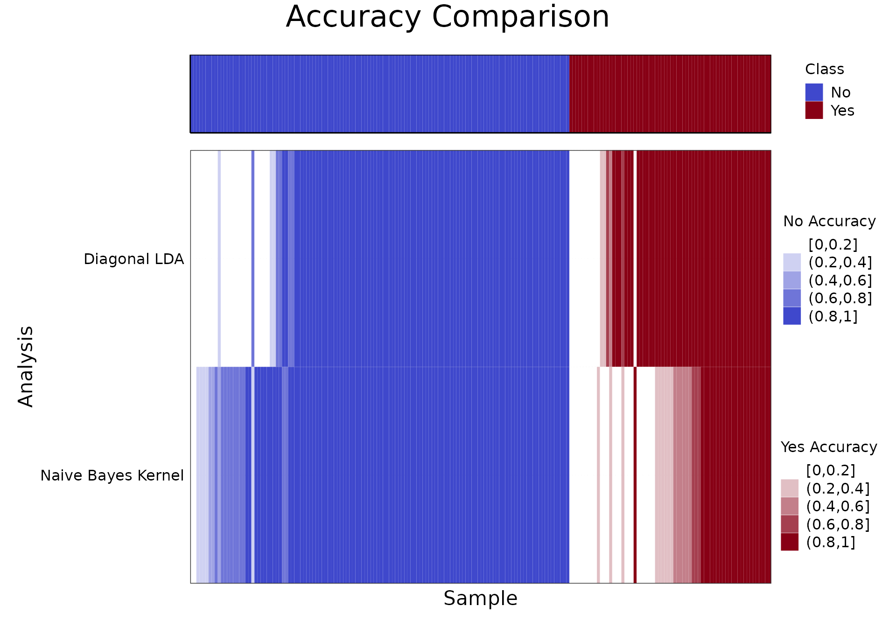
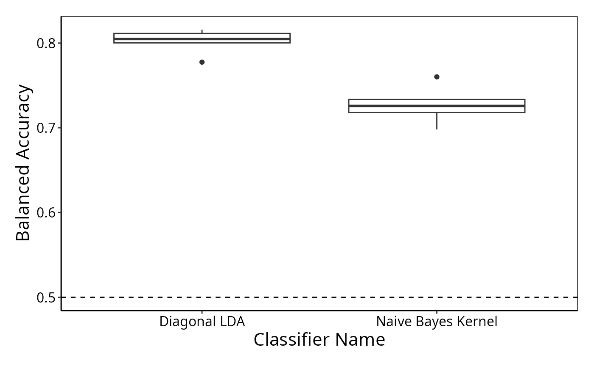
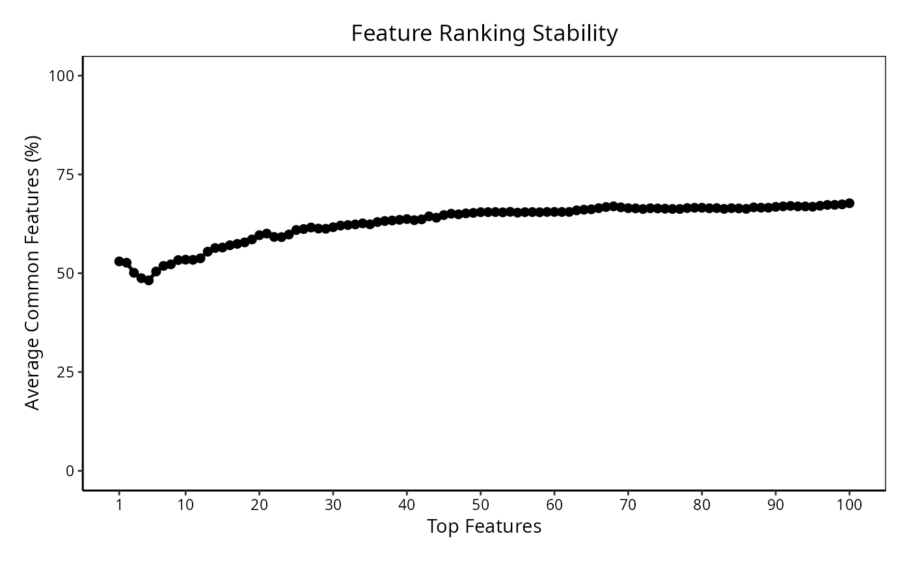

Getting Started with ClassifyR
Dario Strbenac, Ellis Patrick, Graham Mann, Jean Yang, John Ormerod
The University of Sydney, Australia.
ClassifyR.RmdInstallation
Typically, each feature selection method or classifier originates from a different R package, which ClassifyR provides a wrapper around. By default, only high-performance t-test/F-test and random forest are installed. If you intend to compare between numerous different modelling methods, you should install all suggested packages at once by using the command BiocManager::install("ClassifyR", dependencies = TRUE). This will take a few minutes, particularly on Linux, because each package will be compiled from source code.
Overview
ClassifyR provides a structured pipeline for cross-validated classification. Classification is viewed in terms of four stages, data transformation, feature selection, classifier training, and prediction. The driver functions crossValidate and runTests implements varieties of cross-validation. They are:
- Permutation of the order of samples followed by k-fold cross-validation (runTests only)
- Repeated x% test set cross-validation
- leave-k-out cross-validation
Driver functions can use parallel processing capabilities in R to speed up cross-validations when many CPUs are available. The output of the driver functions is a ClassifyResult object which can be directly used by the performance evaluation functions. The process of classification is summarised by a flowchart.
![]()
Importantly, ClassifyR implements a number of methods for classification using different kinds of changes in measurements between classes. Most classifiers work with features where the means are different. In addition to changes in means (DM), ClassifyR also allows for classification using differential variability (DV; changes in scale) and differential distribution (DD; changes in location and/or scale).
Case Study: Diagnosing Asthma
To demonstrate some key features of ClassifyR, a data set consisting of the 2000 most variably expressed genes and 190 people will be used to quickly obtain results. The journal article corresponding to the data set was published in Scientific Reports in 2018 and is titled A Nasal Brush-based Classifier of Asthma Identified by Machine Learning Analysis of Nasal RNA Sequence Data.
Load the package.
A glimpse at the RNA measurements and sample classes.
data(asthma) # Contains measurements and classes variables.
measurements[1:5, 1:5]## HBB BPIFA1 XIST FCGR3B HBA2
## Sample 1 9.72 14.06 12.28 11.42 7.83
## Sample 2 11.98 13.89 6.35 13.25 9.42
## Sample 3 12.15 17.44 10.21 7.87 9.68
## Sample 4 10.60 11.87 6.27 14.75 8.96
## Sample 5 8.18 15.01 11.21 6.77 6.43
head(classes)## [1] No No No No Yes No
## Levels: No YesThe numeric matrix variable measurements stores the normalised values of the RNA gene abundances for each sample and the factor vector classes identifies which class the samples belong to. The measurements were normalised using DESeq2’s varianceStabilizingTransformation function, which produces \(log_2\)-like data.
For more complex data sets with multiple kinds of experiments (e.g. DNA methylation, copy number, gene expression on the same set of samples) a MultiAssayExperiment is recommended for data storage and supported by ClassifyR’s methods.
Quick Start: crossValidate Function
The crossValidate function offers a quick and simple way to start analysing a dataset in ClassifyR. It is a wrapper for runTests, the core model building and testing function of ClassifyR. crossValidate must be supplied with measurements, a simple tabular data container or a list-like structure of such related tabular data on common samples. The classes of it may be matrix, data.frame, DataFrame, MultiAssayExperiment or list of data.frames. For a dataset with \(n\) observations and \(p\) variables, the crossValidate function will accept inputs of the following shapes:
| Data Type | \(n \times p\) | \(p \times n\) |
|---|---|---|
| matrix | ✔ | |
| data.frame | ✔ | |
| DataFrame | ✔ | |
| MultiAssayExperiment | ✔ | |
| list of data.frames | ✔ |
crossValidate must also be supplied with outcome, which represents the prediction to be made in a variety of possible ways.
- A factor that contains the class label for each observation. classes must be of length \(n\).
- A character of length 1 that matches a column name in a data frame which holds the classes. The classes will automatically be removed before training is done.
- A Surv object of the same length as the number of samples in the data which contains information about the time and censoring of the samples.
- A character vector of length 2 or 3 that each match a column name in a data frame which holds information about the time and censoring of the samples. The time-to-event columns will automatically be removed before training is done.
The type of classifier used can be changed with the classifier argument. The default is a random forest, which seamlessly handles categorical and numerical data. A full list of classifiers can be seen by running ?crossValidate. A feature selection step can be performed before classification using nFeatures and selectionMethod, which is a t-test by default. Similarly, the number of folds and number of repeats for cross validation can be changed with the nFolds and nRepeats arguments. If wanted, nCores can be specified to run the cross validation in parallel. To perform 5-fold cross-validation of a Support Vector Machine with 2 repeats:
result <- crossValidate(measurements, classes, classifier = "SVM",
nFeatures = 20, nFolds = 5, nRepeats = 2, nCores = 1)
performancePlot(result)## Warning in .local(results, ...): Balanced Accuracy not found in all elements of results. Calculating it now.Data Integration with crossValidate
crossValidate also allows data from multiple sources to be integrated into a single model. The integration method can be specified with multiViewMethod argument. In this example, suppose the first 10 variables in the asthma data set are from a certain source and the remaining 1990 variables are from a second source. To integrate multiple data sets, each variable must be labeled with the data set it came from. This is done in a different manner depending on the data type of measurements.
If using Bioconductor’s DataFrame, this can be specified using mcols. In the column metadata, each feature must have an assay and a feature name.
measurementsDF <- DataFrame(measurements)
mcols(measurementsDF) <- data.frame(
assay = rep(c("assay_1", "assay_2"), times = c(10, 1990)),
feature = colnames(measurementsDF)
)
result <- crossValidate(measurementsDF, classes, classifier = "SVM", nFolds = 5,
nRepeats = 3, multiViewMethod = "merge")
performancePlot(result, characteristicsList = list(x = "Assay Name"))## Warning in .local(results, ...): Balanced Accuracy not found in all elements of results. Calculating it now.
If using a list of data.frames, the name of each element in the list will be used as the assay name.
# Assigns first 10 variables to dataset_1, and the rest to dataset_2
measurementsList <- list(
(measurements |> as.data.frame())[1:10],
(measurements |> as.data.frame())[11:2000]
)
names(measurementsList) <- c("assay_1", "assay_2")
result <- crossValidate(measurementsList, classes, classifier = "SVM", nFolds = 5,
nRepeats = 3, multiViewMethod = "merge")
performancePlot(result, characteristicsList = list(x = "Assay Name"))## Warning in .local(results, ...): Balanced Accuracy not found in all elements of results. Calculating it now.
A More Detailed Look at ClassifyR
In the following sections, some of the most useful functions provided in ClassifyR will be demonstrated. However, a user could wrap any feature selection, training, or prediction function to the classification framework, as long as it meets some simple rules about the input and return parameters. See the appendix section of this guide titled “Rules for New Functions†for a description of these.
Comparison to Existing Classification Frameworks
There are a few other frameworks for classification in R. The table below provides a comparison of which features they offer.
| Package | Run User-defined Classifiers | Parallel Execution on any OS | Parameter Tuning | Intel DAAL Performance Metrics | Ranking and Selection Plots | Class Distribution Plot | Sample-wise Error Heatmap | Direct Support for MultiAssayExperiment Input |
|---|---|---|---|---|---|---|---|---|
| ClassifyR | Yes | Yes | Yes | Yes | Yes | Yes | Yes | Yes |
| caret | Yes | Yes | Yes | No | No | No | No | No |
| MLInterfaces | Yes | No | No | No | No | No | No | No |
| MCRestimate | Yes | No | Yes | No | No | No | No | No |
| CMA | No | No | Yes | No | No | No | No | No |
Provided Functionality
Although being a cross-validation framework, a number of popular feature selection and classification functions are provided by the package which meet the requirements of functions to be used by it (see the last section).
Provided Methods for Feature Selection and Classification
In the following tables, a function that is used when no function is explicitly specified by the user is shown as functionName.
The functions below produce a ranking, of which different size subsets are tried and the classifier performance evaluated, to select a best subset of features, based on a criterion such as balanced accuracy rate, for example.
| Function | Description | DM | DV | DD |
|---|---|---|---|---|
| differentMeansRanking | t-test ranking if two classes, F-test ranking if three or more | ✔ | ||
| limmaRanking | Moderated t-test ranking using variance shrinkage | ✔ | ||
| edgeRranking | Likelihood ratio test for count data ranking | ✔ | ||
| bartlettRanking | Bartlett’s test non-robust ranking | ✔ | ||
| leveneRanking | Levene’s test robust ranking | ✔ | ||
| DMDranking | Difference in location (mean/median) and/or scale (SD, MAD, \(Q_n\)) | ✔ | ✔ | ✔ |
| likelihoodRatioRanking | Likelihood ratio (normal distribution) ranking | ✔ | ✔ | ✔ |
| KolmogorovSmirnovRanking | Kolmogorov-Smirnov distance between distributions ranking | ✔ | ✔ | ✔ |
| KullbackLeiblerRanking | Kullback-Leibler distance between distributions ranking | ✔ | ✔ | ✔ |
Likewise, a variety of classifiers is also provided.
| Function(s) | Description | DM | DV | DD |
|---|---|---|---|---|
|
DLDAtrainInterface, DLDApredictInterface |
Wrappers for sparsediscrim’s functions dlda and predict.dlda functions | ✔ | ||
| classifyInterface | Wrapper for PoiClaClu’s Poisson LDA function classify | ✔ | ||
| elasticNetGLMtrainInterface, elasticNetGLMpredictInterface | Wrappers for glmnet’s elastic net GLM functions glmnet and predict.glmnet | ✔ | ||
| NSCtrainInterface, NSCpredictInterface | Wrappers for pamr’s Nearest Shrunken Centroid functions pamr.train and pamr.predict | ✔ | ||
| fisherDiscriminant | Implementation of Fisher’s LDA for departures from normality | ✔ | ✔* | |
| mixModelsTrain, mixModelsPredict | Feature-wise mixtures of normals and voting | ✔ | ✔ | ✔ |
| naiveBayesKernel | Feature-wise kernel density estimation and voting | ✔ | ✔ | ✔ |
| randomForestTrainInterface, randomForestPredictInterface | Wrapper for ranger’s functions ranger and predict | ✔ | ✔ | ✔ |
| extremeGradientBoostingTrainInterface, extremeGradientBoostingPredictInterface | Wrapper for xgboost’s functions xgboost and predict | ✔ | ✔ | ✔ |
| kNNinterface | Wrapper for class’s function knn | ✔ | ✔ | ✔ |
| SVMtrainInterface, SVMpredictInterface | Wrapper for e1071’s functions svm and predict.svm | ✔ | ✔ †| ✔ †|
* If ordinary numeric measurements have been transformed to absolute deviations using subtractFromLocation.
†If the value of kernel is not “linear”.
If a desired selection or classification method is not already implemented, rules for writing functions to work with ClassifyR are outlined in the wrapper vignette. Please visit it for more information.
Provided Meta-feature Methods
A number of methods are provided for users to enable classification in a feature-set-centric or interactor-centric way. The meta-feature creation functions should be used before cross-validation is done.
| Function | Description | Before CV | During CV |
|---|---|---|---|
| edgesToHubNetworks | Takes a two-column matrix or DataFrame and finds all nodes with at least a minimum number of interactions | ✔ | |
| featureSetSummary | Considers sets of features and calculates their mean or median | ✔ | |
| pairsDifferencesSelection | Finds a set of pairs of features whose measurement inequalities can be used for predicting with | ✔ | |
| kTSPclassifier | Voting classifier that uses inequalities between pairs of features to vote for one of two classes | ✔ |
Fine-grained Cross-validation and Modelling Using runTests
For more control over the finer aspects of cross-validation of a single data set, runTests may be employed in place of crossValidate. For the variety of cross-validation, the parameters are specified by a CrossValParams object. The default setting is for 100 permutations and five folds and parameter tuning is done by resubstitution. It is also recommended to specify a parallelParams setting. On Linux and MacOS operating systems, it should be MulticoreParam and on Windows computers it should be SnowParam. Note that each of these have an option RNGseed and this needs to be set by the user because some classifiers or feature selection functions will have some element of randomisation. One example that works on all operating systems, but is best-suited to Windows is:
CVparams <- CrossValParams(parallelParams = SnowParam(16, RNGseed = 123))
CVparamsFor the actual operations to do to the data to build a model of it, each of the stages should be specified by an object of class ModellingParams. This controls how class imbalance is handled (default is to downsample to the smallest class), any transformation that needs to be done inside of cross-validation (i.e. involving a computed value from the training set), any feature selection and the training and prediction functions to be used. The default is to do an ordinary t-test (two groups) or ANOVA (three or more groups) and classification using diagonal LDA.
## An object of class "ModellingParams"
## Slot "balancing":
## [1] "downsample"
##
## Slot "transformParams":
## NULL
##
## Slot "selectParams":
## An object of class 'SelectParams'.
## Selection Name: Difference in Means.
##
## Slot "trainParams":
## An object of class 'TrainParams'.
## Classifier Name: Diagonal LDA.
##
## Slot "predictParams":
## An object of class 'PredictParams'.
##
## Slot "doImportance":
## [1] FALSErunTests Driver Function of Cross-validated Classification
runTests is the main function in ClassifyR which handles the sample splitting and parallelisation, if used, of cross-validation. To begin with, a simple classifier will be demonstrated. It uses a t-test or ANOVA ranking (depending on the number of classes) for feature ranking and DLDA for classification. This classifier relies on differences in means between classes. No parameters need to be specified, because this is the default classification of runTests. By default, the number of features is tuned by resubstitution on the training set.
crossValParams <- CrossValParams(permutations = 5)
DMresults <- runTests(measurements, classes, crossValParams, verbose = 1)Here, 5 permutations (non-default) and 5 folds cross-validation (default) is specified. For computers with more than 1 CPU, the number of cores to use can be given to runTests by using the argument parallelParams. The parameter seed is important to set for result reproducibility when doing a cross-validation such as this, because it employs randomisation to partition the samples into folds. Also, RNGseed is highly recommended to be set to the back-end specified to BPPARAM if doing parallel processing. The first seed mentioned does not work for parallel processes. For more details about runTests and the parameter classes used by it, consult the help pages of such functions.
Evaluation of a Classification
The most frequently selected gene can be identified using the distribution function and its relative abundance values for all samples can be displayed visually by plotFeatureClasses.
selectionPercentages <- distribution(DMresults, plot = FALSE)
head(selectionPercentages)
sortedPercentages <- head(selectionPercentages[order(selectionPercentages, decreasing = TRUE)])
head(sortedPercentages)
mostChosen <- sortedPercentages[1]
bestGenePlot <- plotFeatureClasses(measurements, classes, names(mostChosen), dotBinWidth = 0.1,
xAxisLabel = "Normalised Expression")## allFeaturesText
## ANKK1 ANKMY1 ARHGAP39 B9D1 B9D2 C10orf95
## 4 8 72 4 4 100
## allFeaturesText
## C10orf95 SSBP4 ZDHHC1 CROCC CTXN1 NAT14
## 100 100 100 96 88 76The means of the abundance levels of C10orf95 are substantially different between the people with and without asthma. plotFeatureClasses can also plot categorical data, such as may be found in a clinical data table, as a bar chart.
Classification error rates, as well as many other prediction performance measures, can be calculated with calcCVperformance. Next, the balanced accuracy rate is calculated considering all samples, each of which was in the test set once. The balanced accuracy rate is defined as the average rate of the correct classifications of each class.
See the documentation of calcCVperformance for a list of performance metrics which may be calculated.
DMresults <- calcCVperformance(DMresults)
DMresults## An object of class 'ClassifyResult'.
## Characteristics:
## characteristic value
## Selection Name Difference in Means
## Classifier Name Diagonal LDA
## Cross-validation 5 Permutations, 5 Folds
## Features: List of length 25 of feature identifiers.
## Predictions: A data frame of 950 rows.
## Performance Measures: AUC, Balanced Accuracy.
performance(DMresults)## $AUC
## 1 2 3 4 5
## 0.86 0.90 0.89 0.86 0.89
##
## $`Balanced Accuracy`
## 1 2 3 4 5
## 0.8128055 0.8042522 0.8002199 0.7810362 0.7810362The error rate is about 20%. If only a vector of predictions and a vector of actual classes is available, such as from an old study which did not use ClassifyR for cross-validation, then calcExternalPerformance can be used on a pair of factor vectors which have the same length.
Comparison of Different Classifications
The samplesMetricMap function allows the visual comparison of sample-wise error rate or accuracy measures from different ClassifyResult objects. Firstly, a classifier will be run that uses Kullback-Leibler divergence ranking and resubstitution error as a feature selection heuristic and a naive Bayes classifier for classification. This classification will use features that have either a change in location or in scale between classes.
modellingParamsDD <- ModellingParams(selectParams = SelectParams("KL"),
trainParams = TrainParams("naiveBayes"),
predictParams = NULL)
DDresults <- runTests(measurements, classes, crossValParams, modellingParamsDD, verbose = 1)
DDresults## An object of class 'ClassifyResult'.
## Characteristics:
## characteristic value
## Selection Name Kullback-Leibler Divergence
## Classifier Name Naive Bayes Kernel
## Cross-validation 5 Permutations, 5 Folds
## Features: List of length 25 of feature identifiers.
## Predictions: A data frame of 950 rows.
## Performance Measures: None calculated yet.The naive Bayes kernel classifier by default uses the vertical distance between class densities but it can instead use the horizontal distance to the nearest non-zero density cross-over point to confidently classify samples in the tails of the densities.
The per-sample classification accuracy is automatically calculated for both the differential means and differential distribution classifiers and plotted with samplesMetricMap.
resultsList <- list(Abundance = DMresults, Distribution = DDresults)
samplesMetricMap(resultsList, showXtickLabels = FALSE)## Warning in .local(results, ...): Sample Accuracy not found in all elements of results. Calculating it now.## Warning: Removed 2 rows containing missing values (`geom_tile()`).
## TableGrob (2 x 1) "arrange": 2 grobs
## z cells name grob
## 1 1 (2-2,1-1) arrange gtable[layout]
## 2 2 (1-1,1-1) arrange text[GRID.text.533]The benefit of this plot is that it allows the easy identification of samples which are hard to classify and could be explained by considering additional information about them. Differential distribution class prediction appears to be biased to the majority class (No Asthma).
More traditionally, the distribution of performance values of each complete cross-validation can be visualised by performancePlot by providing them as a list to the function. The default is to draw box plots, but violin plots could also be made. The default performance metric to plot is balanced accuracy. If it’s not already calculated for all classifications, as in this case for DD, it will be done automatically.
performancePlot(resultsList)## Warning in .local(results, ...): Balanced Accuracy not found in all elements of results. Calculating it now.We can observe that the spread of balanced accuracy rates is small, but slightly wider for the differential distribution classifier.
The features being ranked and selected in the feature selection stage can be compared within and between classifiers by the plotting functions rankingPlot and selectionPlot. Consider the task of visually representing how consistent the feature rankings of the top 100 different features were for the differential distribution classifier for all 5 folds in the 5 cross-validations.
rankingPlot(DDresults, topRanked = 1:100, xLabelPositions = c(1, seq(10, 100, 10)))
The top-ranked features are fairly similar between all pairs of the 20 cross-validations.
For a large cross-validation scheme, such as leave-2-out cross-validation, or when results contains many classifications, there are many feature set comparisons to make. Note that rankingPlot and selectionPlot have a parallelParams options which allows for the calculation of feature set overlaps to be done on multiple processors.
Generating a ROC Plot
Some classifiers can output scores or probabilities representing how likely a sample is to be from one of the classes, instead of, or as well as, class labels. This enables different score thresholds to be tried, to generate pairs of false positive and false negative rates. The naive Bayes classifier used previously by default has its returnType parameter set to “both”, so class predictions and scores are both stored in the classification result. So does diagonal LDA. In this case, a data frame with class predictions and scores for each class is returned by the classifier to the cross-validation framework. Setting returnType to “score†for a classifier which has such an option is also sufficient to generate a ROC plot. Many existing classifiers in other R packages also have an option that allows a score or probability to be calculated.
By default, scores from different iterations of prediction are merged and one line is drawn per classification. Alternatively, setting mode = “average†will consider each iteration of prediction separately, average them and also calculate and draw confidence intervals. The default interval is a 95% interval and is customisable by setting interval.

This ROC plot shows the classifiability of the asthma data set is high. Some examples of functions which output scores are fisherDiscriminant, DLDApredictInterface, and SVMpredictInterface.
Other Use Cases
Apart from cross-validation of one data set, ClassifyR can be used in a couple of other ways.
Using an Independent Test Set
Sometimes, cross-validation is unnecessary. This happens when studies have large sample sizes and are designed such that a large number of samples is prespecified to form a test set. The classifier is only trained on the training sample set, and makes predictions only on the test sample set. This can be achieved by using the function runTest directly. See its documentation for required inputs.
Cross-validating Selected Features on a Different Data Set
Once a cross-validated classification is complete, the usefulness of the features selected may be explored in another dataset. previousSelection is a function which takes an existing ClassifyResult object and returns the features selected at the equivalent iteration which is currently being processed. This is necessary, because the models trained on one data set are not directly transferrable to a new dataset; the classifier training (e.g. choosing thresholds, fitting model coefficients) is redone. Of course, the features in the new dataset should have the same naming system as the ones in the old dataset.
Parameter Tuning
Some feature ranking methods or classifiers allow the choosing of tuning parameters, which controls some aspect of their model learning. An example of doing parameter tuning with a linear SVM is presented. This particular SVM has a single tuning parameter, the cost. Higher values of this parameter penalise misclassifications more. Moreover, feature selection happens by using a feature ranking function and then trying a range of top-ranked features to see which gives the best performance, the range being specified by a list element named nFeatures and the performance type (e.g. Balanced Accuracy) specified by a list element named performanceType. Therefore, some kind of parameter tuning always happens, even if the feature ranking or classifier function does not have any explicit tuning parameters.
Tuning is achieved in ClassifyR by providing a variable called tuneParams to the SelectParams or TrainParams constructor. tuneParams is a named list, with the names being the names of the tuning variables, except for one which is named “performanceType†and specifies the performance metric to use for picking the parameter values. Any of the non-sample-specific performance metrics which calcCVperformance calculates can be optimised.
tuneList <- list(cost = c(0.01, 0.1, 1, 10))
SVMparams <- ModellingParams(trainParams = TrainParams("SVM", kernel = "linear", tuneParams = tuneList),
predictParams = PredictParams("SVM"))
SVMresults <- runTests(measurements, classes, crossValParams, SVMparams)The index of chosen of the parameters, as well as all combinations of parameters and their associated performance metric, are stored for every validation, and can be accessed with the tunedParameters function.
length(tunedParameters(SVMresults))## [1] 25
tunedParameters(SVMresults)[1:5]## [[1]]
## [[1]]$tuneCombinations
## topN cost Balanced Accuracy
## 1 10 0.01 0.8022680
## 2 20 0.01 0.8066514
## 3 30 0.01 0.8211359
## 4 40 0.01 0.8356204
## 5 50 0.01 0.8261864
## 6 60 0.01 0.8645893
## 7 70 0.01 0.8972746
## 8 80 0.01 0.8885077
## 9 90 0.01 0.8885077
## 10 100 0.01 0.8885077
## 11 10 0.10 0.8400038
## 12 20 0.10 0.8268534
## 13 30 0.10 0.8406709
## 14 40 0.10 0.9181437
## 15 50 0.10 0.9231942
## 16 60 0.10 0.9093768
## 17 70 0.10 0.9477797
## 18 80 0.10 0.9477797
## 19 90 0.10 0.9477797
## 20 100 0.10 0.9572136
## 21 10 1.00 0.8369545
## 22 20 1.00 0.8652563
## 23 30 1.00 0.8854584
## 24 40 1.00 0.9282447
## 25 50 1.00 0.9471126
## 26 60 1.00 0.9565466
## 27 70 1.00 0.9716981
## 28 80 1.00 0.9905660
## 29 90 1.00 0.9905660
## 30 100 1.00 1.0000000
## 31 10 10.00 0.8369545
## 32 20 10.00 0.8564894
## 33 30 10.00 0.8999428
## 34 40 10.00 0.8679245
## 35 50 10.00 1.0000000
## 36 60 10.00 1.0000000
## 37 70 10.00 1.0000000
## 38 80 10.00 1.0000000
## 39 90 10.00 1.0000000
## 40 100 10.00 1.0000000
##
## [[1]]$bestIndex
## [1] 30
##
##
## [[2]]
## [[2]]$tuneCombinations
## topN cost Balanced Accuracy
## 1 10 0.01 0.8073185
## 2 20 0.01 0.7978845
## 3 30 0.01 0.8167524
## 4 40 0.01 0.8160854
## 5 50 0.01 0.8167524
## 6 60 0.01 0.8312369
## 7 70 0.01 0.8696398
## 8 80 0.01 0.8790738
## 9 90 0.01 0.8928912
## 10 100 0.01 0.9124261
## 11 10 0.10 0.8022680
## 12 20 0.10 0.8841243
## 13 30 0.10 0.9029922
## 14 40 0.10 0.8602058
## 15 50 0.10 0.9043263
## 16 60 0.10 0.9043263
## 17 70 0.10 0.9225272
## 18 80 0.10 0.9231942
## 19 90 0.10 0.9326282
## 20 100 0.10 0.9521631
## 21 10 1.00 0.7985516
## 22 20 1.00 0.8986087
## 23 30 1.00 0.9043263
## 24 40 1.00 0.8999428
## 25 50 1.00 0.9521631
## 26 60 1.00 0.9615971
## 27 70 1.00 0.9622642
## 28 80 1.00 0.9811321
## 29 90 1.00 1.0000000
## 30 100 1.00 1.0000000
## 31 10 10.00 0.7796836
## 32 20 10.00 0.8999428
## 33 30 10.00 0.7968363
## 34 40 10.00 0.9332952
## 35 50 10.00 0.9949495
## 36 60 10.00 1.0000000
## 37 70 10.00 1.0000000
## 38 80 10.00 1.0000000
## 39 90 10.00 1.0000000
## 40 100 10.00 1.0000000
##
## [[2]]$bestIndex
## [1] 29
##
##
## [[3]]
## [[3]]$tuneCombinations
## topN cost Balanced Accuracy
## 1 10 0.01 0.8123690
## 2 20 0.01 0.8123690
## 3 30 0.01 0.8029350
## 4 40 0.01 0.8218029
## 5 50 0.01 0.8174195
## 6 60 0.01 0.8362874
## 7 70 0.01 0.8413379
## 8 80 0.01 0.8413379
## 9 90 0.01 0.8696398
## 10 100 0.01 0.8885077
## 11 10 0.10 0.8275205
## 12 20 0.10 0.8746903
## 13 30 0.10 0.8652563
## 14 40 0.10 0.8608729
## 15 50 0.10 0.8898418
## 16 60 0.10 0.8948923
## 17 70 0.10 0.9231942
## 18 80 0.10 0.9188107
## 19 90 0.10 0.9332952
## 20 100 0.10 0.9144273
## 21 10 1.00 0.8564894
## 22 20 1.00 0.9036592
## 23 30 1.00 0.9093768
## 24 40 1.00 0.9093768
## 25 50 1.00 0.9289118
## 26 60 1.00 0.9194778
## 27 70 1.00 0.9477797
## 28 80 1.00 0.9622642
## 29 90 1.00 0.9811321
## 30 100 1.00 0.9905660
## 31 10 10.00 0.8854584
## 32 20 10.00 0.9043263
## 33 30 10.00 0.9326282
## 34 40 10.00 0.7917858
## 35 50 10.00 0.8301887
## 36 60 10.00 0.9811321
## 37 70 10.00 1.0000000
## 38 80 10.00 1.0000000
## 39 90 10.00 1.0000000
## 40 100 10.00 1.0000000
##
## [[3]]$bestIndex
## [1] 37
##
##
## [[4]]
## [[4]]$tuneCombinations
## topN cost Balanced Accuracy
## 1 10 0.01 0.7847341
## 2 20 0.01 0.8218029
## 3 30 0.01 0.8180865
## 4 40 0.01 0.8753573
## 5 50 0.01 0.8797408
## 6 60 0.01 0.8703068
## 7 70 0.01 0.8703068
## 8 80 0.01 0.8753573
## 9 90 0.01 0.8854584
## 10 100 0.01 0.9043263
## 11 10 0.10 0.8180865
## 12 20 0.10 0.8659234
## 13 30 0.10 0.8672575
## 14 40 0.10 0.9376787
## 15 50 0.10 0.9521631
## 16 60 0.10 0.9427292
## 17 70 0.10 0.9521631
## 18 80 0.10 0.9427292
## 19 90 0.10 0.9572136
## 20 100 0.10 0.9666476
## 21 10 1.00 0.8281875
## 22 20 1.00 0.8766914
## 23 30 1.00 0.8672575
## 24 40 1.00 0.9760816
## 25 50 1.00 0.9855155
## 26 60 1.00 0.9949495
## 27 70 1.00 0.9855155
## 28 80 1.00 0.9949495
## 29 90 1.00 0.9949495
## 30 100 1.00 1.0000000
## 31 10 10.00 0.8325710
## 32 20 10.00 0.8817419
## 33 30 10.00 0.8062702
## 34 40 10.00 0.9949495
## 35 50 10.00 1.0000000
## 36 60 10.00 1.0000000
## 37 70 10.00 1.0000000
## 38 80 10.00 1.0000000
## 39 90 10.00 1.0000000
## 40 100 10.00 1.0000000
##
## [[4]]$bestIndex
## [1] 30
##
##
## [[5]]
## [[5]]$tuneCombinations
## topN cost Balanced Accuracy
## 1 10 0.01 0.8057692
## 2 20 0.01 0.7861538
## 3 30 0.01 0.7957692
## 4 40 0.01 0.8200000
## 5 50 0.01 0.8396154
## 6 60 0.01 0.8300000
## 7 70 0.01 0.8442308
## 8 80 0.01 0.8830769
## 9 90 0.01 0.8926923
## 10 100 0.01 0.9173077
## 11 10 0.10 0.8780769
## 12 20 0.10 0.8976923
## 13 30 0.10 0.8876923
## 14 40 0.10 0.9123077
## 15 50 0.10 0.9126923
## 16 60 0.10 0.8984615
## 17 70 0.10 0.9273077
## 18 80 0.10 0.9226923
## 19 90 0.10 0.9130769
## 20 100 0.10 0.9323077
## 21 10 1.00 0.8784615
## 22 20 1.00 0.8976923
## 23 30 1.00 0.8984615
## 24 40 1.00 0.9369231
## 25 50 1.00 0.9465385
## 26 60 1.00 0.9369231
## 27 70 1.00 0.9515385
## 28 80 1.00 0.9950000
## 29 90 1.00 0.9853846
## 30 100 1.00 1.0000000
## 31 10 10.00 0.8784615
## 32 20 10.00 0.9076923
## 33 30 10.00 0.9223077
## 34 40 10.00 0.8457692
## 35 50 10.00 0.9853846
## 36 60 10.00 1.0000000
## 37 70 10.00 1.0000000
## 38 80 10.00 1.0000000
## 39 90 10.00 1.0000000
## 40 100 10.00 1.0000000
##
## [[5]]$bestIndex
## [1] 30The cost value of 1 or 10 appears to often be chosen.
Summary
ClassifyR is a framework for cross-validated classification that provides a variety of unique functions for performance evaluation. It provides wrappers for many popular classifiers but is designed to be extensible if other classifiers are desired.
References
Strbenac D., Yang, J., Mann, G.J. and Ormerod, J. T. (2015) ClassifyR: an R package for performance assessment of classification with applications to transcriptomics, Bioinformatics, 31(11):1851-1853
Strbenac D., Mann, G.J., Yang, J. and Ormerod, J. T. (2016) Differential distribution improves gene selection stability and has competitive classification performance for patient survival, Nucleic Acids Research, 44(13):e119